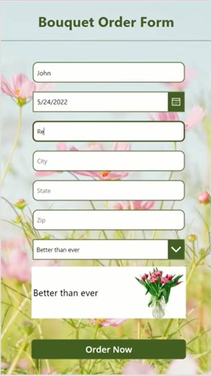

“Esta tecnología va a remodelar prácticamente todas las categorías de software”, afirmó Satya
Nadella, director ejecutivo de Microsoft, en una sesión informativa para periodistas en la sede
de la empresa en Washington.
AI Copilot y Express Design
¿Las IAS de Microsoft sustituirá a un programador?
Microsoft está apostando su futuro a la IA con miles de millones de dólares de inversión. En
colaboración con la startup OpenAI, la empresa aspira a rivalizar con Google, de Alphabet Inc, y
a obtener enormes beneficios de las herramientas que aceleran todo tipo de creación de
contenidos, automatizando tareas, si no los propios puestos de trabajo.
El poder de la llamada IA generativa, capaz de crear prácticamente cualquier texto o imagen, se
dio a conocer al público el año pasado con el lanzamiento de ChatGPT, el chatbot sensación de
OpenAI.
Competencia entre Micriosoft y Google
Microsoft pretende ahora comercializar la tecnología de OpenAI, incluido ChatGPT, entre sus
clientes de la nube y añadir la misma potencia a su conjunto de productos, incluida la búsqueda.
Google dio a conocer el lunes 5 de Febrero un chatbot propio llamado Bard, mientras que planea
lanzar una IA para su motor de búsqueda que pueda sintetizar material cuando no exista una
respuesta sencilla en línea.
Declaraciones Microsoft
“No es solo un motor de búsqueda, es un motor de respuesta. Porque siempre hemos tenido
respuestas, pero con estos modelos grandes la fidelidad es mucho mejor”, resaltó Satya
Nadella, CEO de Microsoft.
Prabhakar Raghavan, vicepresidente de Google, manifestó que “este es el viaje en el que
hemos estado con grandes modelos de lenguaje que pueden hacer que la interacción con la
tecnología sea más natural y conversacional”.
Power Apps es este nuevo sistema forma parte de la plataforma Power Apps de Microsoft, cuyo
propósito es hacer que las empresas puedan crear apps de Inteligencia de Negocios (BI) sin
escribir nada de código. (Por ejemplo, los negocios pueden crear sus propias apps para hacer el
seguimiento de la cadena de suministros, tomar asistencia a sus empleados, comunicarse con sus
clientes y más).
Como te comentábamos, este nuevo sistema forma parte de la plataforma Power Apps de Microsoft, cuyo propósito es hacer que las empresas puedan crear apps de Inteligencia de Negocios (BI) sin escribir nada de código. (Por ejemplo, los negocios pueden crear sus propias apps para hacer el seguimiento de la cadena de suministros, tomar asistencia a sus empleados, comunicarse con sus clientes y más)
AI COPILOT
AI Copilot es un asistente impulsado por GPT que se ubica en la barra lateral de Power Apps. La interacción es similar a lo que hacemos con Bing o ChatGPT y consiste en expresar con lenguaje natural tus objetivos. La aplicación se desarrolla en tiempo real conforme se dictan las instrucciones y en algunos casos, la IA sugerirá algunas implementaciones para facilitar el trabajo.
Por ejemplo, si queremos crear una aplicación para gestionar las reservas de un restaurante, solo tenemos que decirle a Copilot: "Quiero una aplicación para reservar mesas en un restaurante". Copilot te generará automáticamente una tabla de datos con los campos necesarios para nuestra aplicación y nos sugerirá cómo personalizarla según nuestras preferencias. Luego podremos añadir más funcionalidades a nuestra aplicación usando el lenguaje natural o arrastrando y soltando componentes.
Ventajas
Podría democratizar todavía más el desarrollo de software:
Acelerar el desarrollo de aplicaciones, flujos y bots:
Impulsar la transformación digital y la automatización de procesos:
Express Design
El 24 de mayo tuvo lugar el evento anual para desarrolladores Microsoft Build, en el que la compañía presentó sus avances tecnológicos y nuevos productos para el 2022. Y una de las más interesantes ha sido la nueva función 'Express Design' de la plataforma Power Apps, que convierte tus bocetos en aplicaciones reales en cuestión de segundos.
¿Cuánto tiempo te tomaría crear este formulario para una aplicación?

En este caso menos de un segundo, pues este formulario ha sido diseñado a partir de un dibujo muy básico en papel, que ha sido materializado por el nuevo sistema Low-Code/No-Code de Microsoft llamado Express Design. Este nuevo sistema promete desarrollar la UI de una app sin programar nada, solo hay que decirle a Power Apps cómo quieres que se vea (importándolo desde Figma, PDF o incluso dibujándolo a mano alzada
Una vez importado, la Inteligencia Artificial transformará el diseño en una interfaz de usuario básica, que luego puedes personalizar con diversas opciones e incluso integrar la app con tus bases de datos en SAP, Salesforce y SQL.
.jpg)